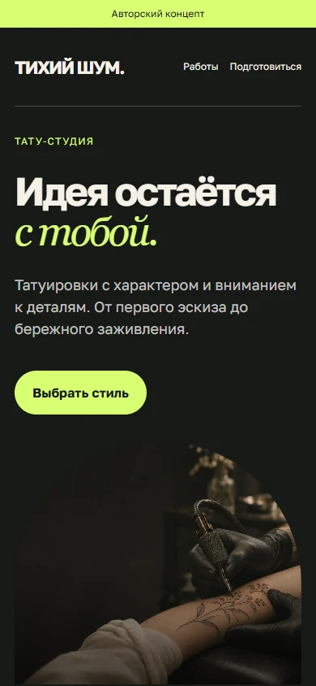

демонстрационный проект


01 / Авторский концепт
ЛУЧ
Предметная витрина для студии света.
Сценарии освещения можно переключать прямо на странице. Тёплая типографика и предметная подача помогают рассмотреть коллекцию.
Открыть работающий сайт